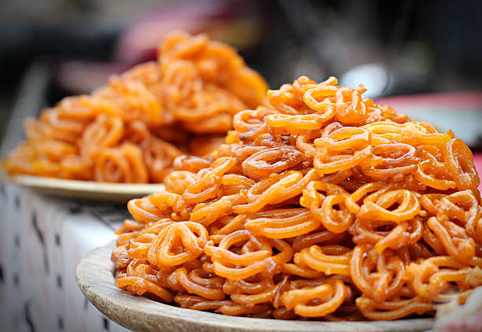

Desi Odin Kitchen's
Crispy Jalebi Recipe - A Sweet Delight for Your Taste Buds
Back to Home-Page

Introduction:
Immerse yourself in the mesmerizing world of Indian sweets with our delightful Jalebi recipe. These golden spirals of sweetness are a timeless favorite, loved for their crispy texture and irresistible sugary syrup. Whether it's a festive occasion or a simple indulgence, Jalebi is a treat that never fails to captivate taste buds with its unique blend of flavors. Embark on a culinary adventure as we guide you through the steps to create this iconic Indian dessert in the comfort of your kitchen.
Ingredients
For the Batter
- 1 cup all-purpose flour
- 1 tablespoon chickpea flour (besan)
- 1/2 teaspoon baking powder
- 1/4 teaspoon turmeric powder (for color, optional)
- 1 cup warm water
- A pinch of saffron strands (soaked in 1 tablespoon of warm milk)
- Vegetable oil (for frying)
For the Sugar Syrup
- 1 cup sugar
- 1/2 cup water
- A few strands of saffron (soaked in 1 tablespoon of warm milk)
- 1/2 teaspoon cardamom powder
- 1 teaspoon rose water (optional)
- Lemon juice (a few drops)
Steps
- Prepare the batter by combining dry ingredients and adding warm water.
- Ferment the batter for 1-2 hours.
- Make the sugar syrup with saffron, cardamom, and rose water (optional).
- Fry the Jalebi batter in a spiral shape until golden and crispy.
- Soak the Jalebi in warm sugar syrup.
- Serve warm and garnish with nuts (optional).
Savor the enchanting taste of Jalebi, a treat that brings sweetness to any occasion.